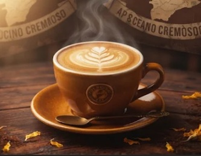

Espresso Macondo
Extracción concentrada con cuerpo sedoso, acidez brillante y notas a panela y chocolate negro.
$ 5.500 COP
Café Macondo
Tradicion y Sabor Colombiano en Cada Taza
Vive la experiencia de nuestra magia artesanal en cada preparación, donde cada taza cuenta una historia única inspirada en el realismo mágico.
Descubre la selección completa de cafés de origen y métodos de extracción artesanales.
Extracción concentrada con cuerpo sedoso, acidez brillante y notas a panela y chocolate negro.
$ 5.500 COP

Método de goteo manual que resalta la claridad aromática, con notas florales y frutas cítricas.
$ 8.500 COP

Espresso doble combinado con leche texturizada al punto exacto de microespuma aterciopelada.
$ 7.500 COP